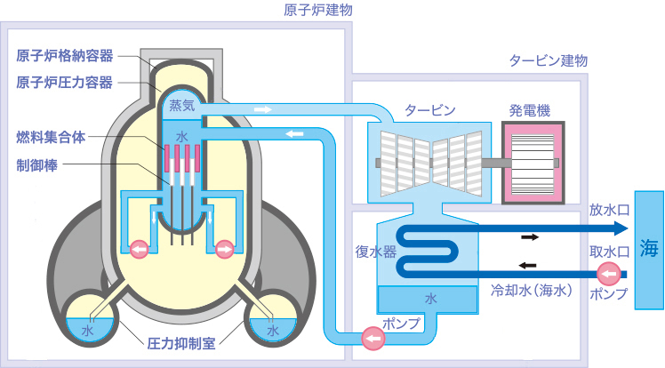
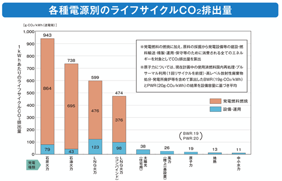
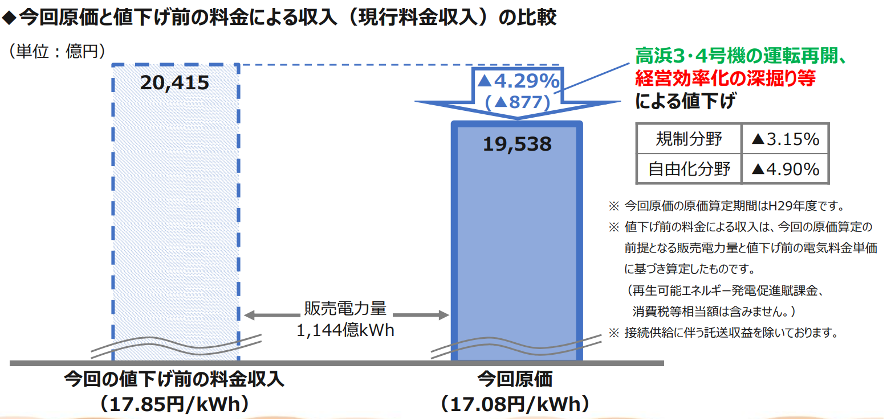

初年次の進化版のヤツ
テーマ：原発と私たち
はじめに
原子力発電と私たちというテーマで、原子力発電（以下、原発）の仕組みを整理した後、メリット、デメリットを挙げた後、賛否を問います。
私たちのグループは、創価大学における２年時 の領域選択で、応用物理を選択しようと考えてい る人が集まっているため、HPは物理に関連するものが良いと考えました。
原発の仕組み
原子力発電は、原子炉の中でウラン燃料が核分裂するときに出る熱で水を沸かして水蒸気を作り、この水蒸気の力でタービン(羽根車)を回し、連結している発電機で電気をつくります。
タービンを回し終えた後の蒸気は復水器で冷やされて水に戻り、再び原子炉へ送られています。
原子力発電は水の中に入った原子炉の中でウラン燃料が核分裂を起こして熱ができ、その熱で水を水蒸気に変えて、タービンを回して、電気を作っている。またウラン燃料は繰り返し使うことができます。
また、原子力発電を作る場所は、特に固い岩盤が選ばれ、地震などに備えた何重もの安全対策をしています。

図1 原発の仕組み
原発のメリット
原発のメリットは3つあります
- 発電時のCO₂排出量が少ない。
原子力発電は、発電する際にCO₂を排出しません。発電設備の運用に少量のCO₂を排出するのみです。図１からわかるように、現在、日本の主力電源である火力発電と比べると、20倍以上CO₂排出量が少ないです.これは、再生可能エネルギーと同程度のCO₂排出量です。

図2 電源別ライフサイクルCO₂排出量
- 原発は発電コストが安い
原発では 10.1 円の発電コス トで 1kwh の電気量が発電できるのに対し、火力発電では 1kwh あたりの電気量の発電のコストが 石炭を使った場合が12.3 円、天然ガスを使った場 合が 13.7 円，石油を使った場合が 30.6〜43.4 円 と、他の燃料と比べても安く発電ができます。実際に原発で電気代が少なくなる事例としては、図 2 より 2017 年に関西電力が 2 基の原発 を再稼働できたことによる年間約 4000 円の電気 料金の値下げを行ったことが挙げられます。

図3 料金の値下げ
- 資源の確保が安全
原子力発電の燃料となるウランは、石油に比べて政情の安定した国々に埋蔵されているため、資源の安定確保が可能です。石油は、中東などの政治が不安定な地域に埋蔵されています。一方ウランは、アメリカなどの、比較的安定した地域に埋蔵されています。
まとめ
良いところ
・発電する際にCO₂を発生しないため、地球温暖化防止に大きく貢献できる
・発電コストが安く発電できる
・安定して燃料を確保できる
悪いところ（デメリット、問題点）
・事故が起きた時、広範囲に甚大な影響を及ぼす
・建設費用や、反対運動への広報費などで多額のコストがかかる
・原子力発電へのテロの危険性があること
原発のデメリット
原発の問題点
あなたの原発に関する意見を聞かせてください！
アンケートはこちら
アンケート結果はこちらからご覧いただけます！
アンケート結果を表示
参考文献
中国電力(2021)「原子力発電のしくみ」https://www.energia.co.jp/atom/more2.html
電気事業連合会（2016）「CO2を排出しない」https://www.fepc.or.jp/nuclear/state/riyuu/co2/index.html
関西電力（2017）「電気料金の値下げ」 https://www.kepco.co.jp/corporate/pr/2017/pdf/0706_2j_02.pdf